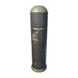
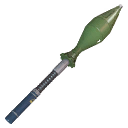
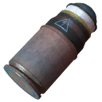
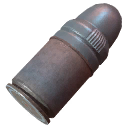

Launcher rounds do their damage with a blast, not with the projectile, so the tables show the blast. The three launcher families use different items: the Granatgevär m/49 fires the “Round” items, the G79 Grenade Launcher and MGR-6 Grenade Launcher fire the “Cartridge” items, and the RLG-7 has its own LG-7V round.
What each round does
Effect on impact as the tuning files give it (the files do not say whether the weapon's quality multiplier also scales the blast).
| Round | Fired by | Effect on impact | Max range (m) |
|---|---|---|---|
| Grenade Launcher HE Cartridge | G79 Grenade Launcher, MGR-6 Grenade Launcher | Blast on impact: 290 damage to machines within 8 m, 40 to players within 8 m | 1,000 |
| High-Explosive Dual-Purpose Round | Granatgevär m/49 | Blast on impact: 580 damage to machines within 12 m, 80 to players within 12 m | 1,000 |
| LG-7V High-Explosive Round | RLG-7 | Blast on impact: 700 damage to machines within 10 m, 100 to players within 10 m | 1,000 |
| Electromagnetic Pulse Round | Granatgevär m/49 | Blast on impact: 15 damage to machines within 15 m, 15 to players within 15 m | 1,000 |
| Grenade Launcher EMP Cartridge | G79 Grenade Launcher, MGR-6 Grenade Launcher | Blast on impact: 10 damage to machines within 10 m, 10 to players within 10 m | 1,000 |
| Grenade Launcher Smoke Cartridge | G79 Grenade Launcher, MGR-6 Grenade Launcher | – | 1,000 |
| Smoke Round | Granatgevär m/49 | – | 1,000 |
| Highly-Radioactive Dual-Purpose Round | Experimental Grg m/49 | Blast on impact: 0 damage to machines within 7.5 m, 0 to players within 7.5 m | 1,000 |
| Highly Corrosive Dual-Purpose Round | Experimental Grg m/49 | Blast on impact: 580 damage to machines within 12 m, 80 to players within 12 m | 1,000 |
Grenade Launcher HE CartridgeHigh-explosive
- Stack size
- 4
- Max range
- 1,000 m
A high-explosive grenade. All of its damage comes from the blast, so aim at the ground under a machine or at a group, not at a single small part.
From the game files: Blast on impact: 290 damage to machines within 8 m, 40 to players within 8 m.
Recipe per craft: 4 Explosive, 8 Steel
High-Explosive Dual-Purpose RoundHigh-explosive

- Stack size
- 4
- Max range
- 1,000 m
A high-explosive grenade. All of its damage comes from the blast, so aim at the ground under a machine or at a group, not at a single small part.
From the game files: Blast on impact: 580 damage to machines within 12 m, 80 to players within 12 m.
 Granatgevär m/49
Granatgevär m/49 Ammo Schematic Points
Ammo Schematic PointsRecipe per craft: 4 Explosive, 8 Steel
LG-7V High-Explosive RoundHigh-explosive

- Stack size
- 4
- Max range
- 1,000 m
A high-explosive grenade. All of its damage comes from the blast, so aim at the ground under a machine or at a group, not at a single small part.
From the game files: Blast on impact: 700 damage to machines within 10 m, 100 to players within 10 m.
 DLC Schematic Point
DLC Schematic PointRecipe per craft: 4 Explosive, 8 Steel
Electromagnetic Pulse RoundEMP
- Stack size
- 4
- Max range
- 1,000 m
An electromagnetic pulse that briefly knocks out machines caught in the blast radius. The blast itself does very little damage; use it to stop a big machine so you can aim at its components.
From the game files: Blast on impact: 15 damage to machines within 15 m, 15 to players within 15 m.
Granatgevär m/49Ammo Schematic PointsRecipe per craft: 4 Electrolyte, 2 Copper
Grenade Launcher EMP CartridgeEMP

- Stack size
- 4
- Max range
- 1,000 m
An electromagnetic pulse that briefly knocks out machines caught in the blast radius. The blast itself does very little damage; use it to stop a big machine so you can aim at its components.
From the game files: Blast on impact: 10 damage to machines within 10 m, 10 to players within 10 m.
DLC Schematic PointRecipe per craft: 4 Electrolyte, 2 Copper
Grenade Launcher Smoke CartridgeSmoke

- Stack size
- 4
- Base damage
- 0
- Armour mult.
- ×1
- Component mult.
- ×1
- Falloff
- none
- Max range
- 1,000 m
Creates a smoke screen. Machines cannot see you through the smoke, so it covers an escape, a revive or a reposition.
DLC Schematic PointsRecipe per craft: 4 Explosive, 2 Aluminum
Smoke RoundSmoke
- Stack size
- 4
- Base damage
- 0
- Armour mult.
- ×1
- Component mult.
- ×1
- Falloff
- none
- Max range
- 1,000 m
Creates a smoke screen. Machines cannot see you through the smoke, so it covers an escape, a revive or a reposition.
Granatgevär m/49Ammo Schematic PointsRecipe per craft: 4 Explosive, 2 Aluminum
Flare RoundFlare
- Stack size
- 4
No weapon in the extracted weapon tuning lists this item, so there is no damage, range or effect data for it. It exists in the item table with an item ID.
Chaff RoundChaff
- Stack size
- 4
No weapon in the extracted weapon tuning lists this item, so there is no damage, range or effect data for it. It exists in the item table with an item ID.
Highly-Radioactive Dual-Purpose RoundRadioactive

- Stack size
- 4
- Max range
- 1,000 m
An experimental round whose blast does no damage: it blinds the machines it covers, so you can reposition or pick them off while they can't see you.
In-game description Radioactivity: completely disables machine visual senses upon impact for a short time. Also deals very mild damage over time. These rounds have a moderate chance to inflict radioactive poisoning to the user upon firing.
From the game files: Blast on impact: 0 damage to machines within 7.5 m, 0 to players within 7.5 m.
Experimental only: it can be loaded only into an experimental (Q6) weapon (see Fired by).
 Experimental Schematic Points
Experimental Schematic PointsRecipe per craft: 16 Explosive, 8 Copper, 1 Refined Uranium Alloy
Highly Corrosive Dual-Purpose RoundCorrosive

- Stack size
- 4
- Max range
- 1,000 m
The experimental version of the high-explosive dual-purpose round, with a corrosive filling. The files give it the same blast as the normal HEDP round; the corrosion comes on top.
In-game description Corrosion: deals significantly heavier damage to armor, but less damage to components.
From the game files: Blast on impact: 580 damage to machines within 12 m, 80 to players within 12 m.
Experimental only: it can be loaded only into an experimental (Q6) weapon (see Fired by).
Experimental Schematic PointsRecipe per craft: 16 Explosive, 8 Aluminum, 1 Refined Uranium Alloy
Weapons that use it4 weapons
 Loads high-explosive, EMP and smokeMGR-6 Grenade LauncherDLC
Loads high-explosive, EMP and smokeMGR-6 Grenade LauncherDLC Loads high-explosive, EMP and smokeGranatgevär m/49Loads high-explosive, EMP and smoke
Loads high-explosive, EMP and smokeGranatgevär m/49Loads high-explosive, EMP and smokeExperimental Grg m/49 also: radioactive and corrosiveRLG-7DLC
Where to find it
The crafting schematic of each round, what it costs and what one craft takes:
| Ammo | Crafting schematic | Cost | Recipe per craft |
|---|---|---|---|
| Grenade Launcher HE Cartridge | Grenade Launcher HE Cartridge | Free | 4 Explosive, 8 Steel |
| High-Explosive Dual-Purpose Round | High-Explosive Dual-Purpose Round | 10 Ammo Schematic Points | 4 Explosive, 8 Steel |
| LG-7V High-Explosive Round | LG-7V High-Explosive Round | 1 DLC Schematic Point | 4 Explosive, 8 Steel |
| Electromagnetic Pulse Round | Electromagnetic Pulse Round | 80 Ammo Schematic Points | 4 Electrolyte, 2 Copper |
| Grenade Launcher EMP Cartridge | Grenade Launcher EMP Cartridge | 1 DLC Schematic Point | 4 Electrolyte, 2 Copper |
| Grenade Launcher Smoke Cartridge | Grenade Launcher Smoke Cartridge | 2 DLC Schematic Points | 4 Explosive, 2 Aluminum |
| Smoke Round | Smoke Round | 40 Ammo Schematic Points | 4 Explosive, 2 Aluminum |
| Flare Round | No schematic | – | – |
| Chaff Round | No schematic | – | – |
| Highly-Radioactive Dual-Purpose Round | HRDP Round | 4 Experimental Schematic Points | 16 Explosive, 8 Copper, 1 Refined Uranium Alloy |
| Highly Corrosive Dual-Purpose Round | HCDP Round | 16 Experimental Schematic Points | 16 Explosive, 8 Aluminum, 1 Refined Uranium Alloy |
Where ammo comes from:
- Ammo boxes. The map files have 13,420 ammo box spawn points; what a box holds is rolled at random (a crate spawn point: the game may not put a crate on every spot). Ammo boxes on the map
- Destroyed machines drop ammo when you loot their wrecks.
- Crafting. Ammo schematics are bought with Ammo Schematic Points: “Acquired by crafting ammo or found as loot when exploring the world.” The map files place 23 pickups that give them. Ammo schematic points The experimental rounds' schematics are bought with Experimental Schematic Points: “Acquired by completing Base Assault and Defense missions.” DLC ammo schematics are bought with DLC Schematic Points: “Acquired by crafting DLC items.”
- The Ammo Pack refills ammo; 4 of them are placed by hand in the world. Ammo Packs on the map
- The Salvage skill gives more ammo from every container and machine.
Ammo box counts per region are on the main ammo page.